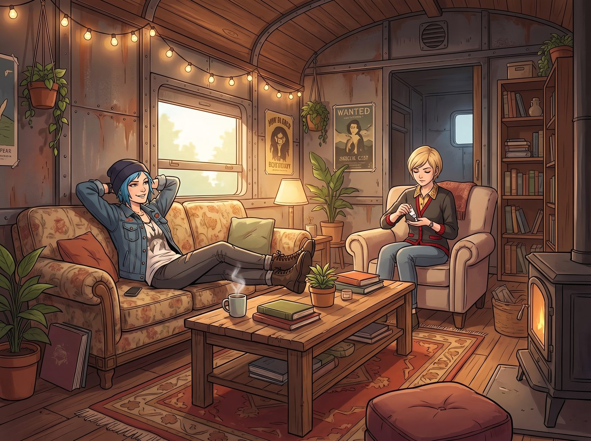

做給誰的

「所以，這幫有錢人就是一群無可救藥的受虐狂和冤大頭，對吧？」
晚餐後，Chloe 雙手枕在腦後，雙腳翹在茶几上。她剛剛在手機上刷到了一篇財經新聞，講的是世界工廠憑藉極致的供應鏈，把實驗室培育鑽石（Lab-Grown Diamonds）的價格壓得越來越低，讓傳統的天然鑽石巨頭坐立難安。
Chloe 轉過頭，一臉挑釁地看著正在給手指塗護手霜的 Victoria。
「大小姐，妳們那個圈子到底在堅持什麼？中國的工廠現在能造出分子結構 100% 相同、甚至純淨度更高的培育鑽石，價格只要天然鑽的十分之一；廣州的流水線能做出連原廠鑑定師都得拿放大鏡看半天的頂級平替包包。既然物理屬性和使用價值已經被『世界工廠』卷到了極致、甚至超越了原版，為什麼妳們這些老錢（Old Money）還非要花 300 刀買一瓶酸澀的香檳，花 500 刀買一塊帶著泥巴的白松露？」
Chloe 嗤笑了一聲：「這難道僅僅是因為，那個 Logo 是妳們裝逼俱樂部的入場券？」
Victoria 停下了塗護手霜的動作。她沒有像往常那樣暴跳如雷，而是用一種看著單細胞生物的悲憫眼神看著 Chloe。
「Chloe，妳對『奢侈』這兩個字的理解，還停留在藍領階級的『性價比』和『物理實用性』上。」Victoria 慢條斯理地將護手霜蓋子擰緊，「當一個東西可以被流水線完美複製的時候，它在我們眼裡，就已經死了。」
「但它更完美了啊！」Chloe 不服氣。
「『完美』，恰恰是工業時代最廉價的屬性。」
接話的是 Lily。她端著永遠喝不完的熱牛奶，從工作站的螢幕後探出頭來。對於這種涉及宏觀經濟、階級壁壘與系統運作邏輯的問題，行政黑魔法師有著絕對的發言權。
Lily 走到白板前，沒有畫報表，而是寫下了三個冰冷的詞彙：低效、共識、血統。
「Chloe 學姐，世界工廠的底層邏輯是『極致的效率與規模化』。他們試圖用技術消除所有的誤差、瑕疵和稀缺性。」Lily 推了推圓框眼鏡，語氣冷酷地解剖著資本主義的頂層邏輯：
「但老錢家族購買的，從來不是商品本身。他們購買的，正是『極致的低效與不可複製的誤差』。」
Lily 指著白板上的第一個詞。
「以 500 刀的阿爾巴（Alba）白松露為例。它的價值不在於它比實驗室裡人工培育的蘑菇好吃多少。它的價值在於：它『必須』在義大利皮埃蒙特大區、某個充滿霧氣的清晨，由一隻經過訓練的獵犬，在特定的橡樹根部用鼻子嗅出來。以前人們用豬，但豬找到松露會直接吃掉，還會把土地刨得一塌糊塗，所以義大利早在 1985 年就禁止了。
它無法被大棚量產，產量完全看老天爺的臉色。老錢們支付那 500 刀，買的不是那股奇特的瓦斯味，而是『這個星球上有一小撮人，為了滿足我的一口食慾，在泥地裡進行了極度低效且昂貴的勞動』。世界工廠能複製松露的分子，但無法複製這種『對他人時間與勞動的絕對支配權』。」
Chloe 愣住了。這種充滿了階級壓迫感的解釋，讓她這個底層龐克感到一陣不寒而慄。
「至於品牌和包包，」Lily 轉向第二個詞，共識。
「在金融學裡，這叫作『凡勃倫效應（Veblen Effect）』，但我更喜歡稱之為『社會學的密碼學（Sociological Cryptography）』。
當廣州的流水線把愛馬仕（Hermès）的平替做到物理層面 100% 完美時，那個實體包包就已經失去了意義。老錢們真正在意的，是那個包背後的『購買資格』。妳必須在特定的店裡，忍受櫃姐的冷眼，購買幾萬美金妳根本不需要的垃圾配貨，熬過漫長的等待名單（Waitlist），才能拿到那個包。」
Lily 的聲音軟糯，卻像刀子一樣鋒利：
「這是一種『燒錢證明（Proof of Burn）』。老錢們通過這種極度浪費時間、浪費金錢、甚至帶有屈辱性的購買過程，向同階級的人發送加密信號：『我擁有足夠的冗餘資產去陪這個系統玩無聊的遊戲』。平替包包能複製物理外觀，但它無法偽造妳在這個權力遊戲中支付的『沉沒成本』。在他們的俱樂部裡，沒有經過配貨折磨的包，就像沒有區塊鏈確認的假幣，一文不值。」
「太瘋狂了……」Max 聽得目瞪口呆，「所以，他們花幾十倍的錢，買的其實是一種『我比你更有資格浪費』的優越感？」
「完全正確，Max。」
Victoria 終於開口了。她優雅地靠在沙發上，接過了 Lily 的話頭，為這場老錢解剖課進行最後的總結。
「當這個世界的科技和製造業強大到能讓所有人都用上完美無瑕的培育鑽石時，『完美』就成了窮人的標籤。」
Victoria 眼神裡透著一種與生俱來的傲慢與殘酷的清醒：
「因為窮人需要『性價比』，需要用一顆無瑕的鑽石來證明愛，需要用一個看不出破綻的平替包來偽裝身分。
但在我們那個圈子裡，沒有人會在意妳的鑽石是不是最閃的。他們在意的是這顆鑽石的血統（Provenance）。這顆鑽石是不是妳曾祖母在 1920 年的巴黎拍賣會上買下的？它是不是見證過某個已經沒落的歐洲王室的婚禮？
世界工廠能把物理參數卷到宇宙第一，但他們永遠無法製造出『時間』。他們無法製造出『歷史的灰塵』。」
Victoria 拿起桌上的一個廉價玻璃杯，輕輕搖晃著裡面的直飲水，彷彿那是一杯頂級的羅曼尼·康帝（Romanée-Conti）：
「老錢俱樂部之所以沒有被平替卷爆，是因為當你們在追求『實用與完美』的終點時，我們早就換了賽道。我們把戰場轉移到了『歷史、特權、低效與壟斷』上。這是一場永遠不公平的遊戲。」
車廂裡安靜極了。
Chloe 沒有馬上說話。
她把翹在茶几上的腳放了下來，盯著自己指甲縫裡怎麼也洗不乾淨的機油，沉默了好一會兒。
「不對。」她慢慢開口，「妳們說的那個，老娘懂一半。」
Victoria 挑了挑眉。
「在波特蘭工坊的時候，對街那個老太太拿來一台收音機，說是她老公留下的，音量旋鈕早就裂了。」Chloe 說，「我本來可以換一個新的塑膠鈕，十塊錢，五金行就有，一模一樣。但我沒換。我把舊的那個拆下來，用環氧樹脂一點一點補好，再磨平，裝回去。」
「她拿回去的時候哭了。不是因為收音機變好了，而是因為那還是她老公每天早上轉的那一個。」
車廂裡安靜了下來。
Chloe 抬起下巴，朝 Max 脖子上掛著的那個鈦合金相機鐵殼指了指。
「那個矽谷佬出五萬要買這個，我不賣。不是因為它稀有，也不是因為它能證明老娘是什麼階級。是因為它是給 Max 做的。上面每一道刮痕，都是她摔下去、我再把它焊回來的痕跡。」
她看著 Lily 寫在白板上的那三個詞，又看了看 Victoria。
「工廠能做出一模一樣的東西。妳們那個圈子，拿稀有和麻煩去把人擋在門外。但有一種東西，兩邊都做不出來。」
她頓了頓，聲音放低了一點：
「動手做的那個人，心裡清楚它是做給誰的。」
Lily 看著她，推了推眼鏡，在白板的三個詞旁邊，安靜地補上了第四個：歸屬。
「不過……」Kate 溫柔的聲音打破了這令人窒息的階級沉默。
她看著 Victoria，眼神裡沒有對老錢的羨慕，只有一種深深的悲憫：「如果妳吃的每一口松露、喝的每一口香檳、背的每一個包，都必須承載著『證明階級』、『篩選同類』和『防禦平民』的沉重任務……那妳真的能嚐出食物的味道嗎？妳真的會因為得到一個包而感到純粹的快樂嗎？」
Victoria 握著玻璃杯的手，微微一僵。
她看著杯子裡的直飲水。在那個充滿了 300 刀香檳和 500 刀白松露的西雅圖豪宅裡，她從來沒有覺得輕鬆過。每一頓晚宴都是戰場，每一件衣服都是盔甲。她必須時刻保持無懈可擊，才能不被同類踢出那個用「共識」和「血統」打造的黃金牢籠。
「不。」
Victoria 垂下眼眸，聲音裡那種傲慢的刺甲褪去了，取而代之的是一絲疲憊的真實：
「那種生活，其實無聊透頂。它就像一個永遠沒有盡頭的跑步機，妳必須不斷地用更稀缺、更荒謬的東西，來填補內心的空洞。」
Victoria 抬起頭，環視著這間充滿了機油味、牆上貼著寶麗來照片、桌上放著廉價薯條的二號車廂。
「這也是為什麼，我會選擇留在這輛破車裡。」
她看了一眼 Max 胸前那個鐵殼，又看了一眼 Chloe。
Victoria 嘴角勾起一抹釋然的笑意：「因為在這裡，我不需要用『燒錢證明』來換取你們的認可。這裡沒有凡勃倫效應，沒有階級密碼學。在這裡，如果我喝了一杯 2 塊錢的可樂還打個嗝，Chloe 只會嘲笑我像個土包子，而不會把我踢出車廂。」
「那是因為妳打嗝的聲音真的很像一隻受驚的鴨子，大小姐。」Chloe 毫不留情地補了一刀，但眼底卻帶著溫暖的笑意。
Max 忍不住笑了出來。她舉起寶麗來相機。
鏡頭裡，沒有頂級的鑽石，沒有血統高貴的老錢。只有一個終於卸下黃金盔甲、穿著皺巴巴睡衣的名媛，正在和一個藍領太妹互相翻著白眼。
「喀嚓。」
照片吐出。Max 在背面寫下：
『規則第 95 條：世界工廠能複製一切，老錢圈子能壟斷時間。但在二號車廂，最貴的東西兩邊都做不出來：動手的人心裡清楚，它是做給誰的。』